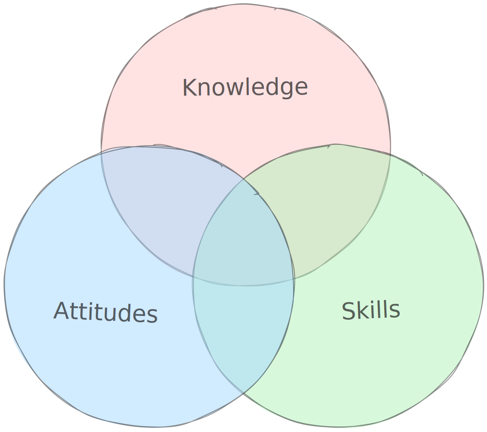
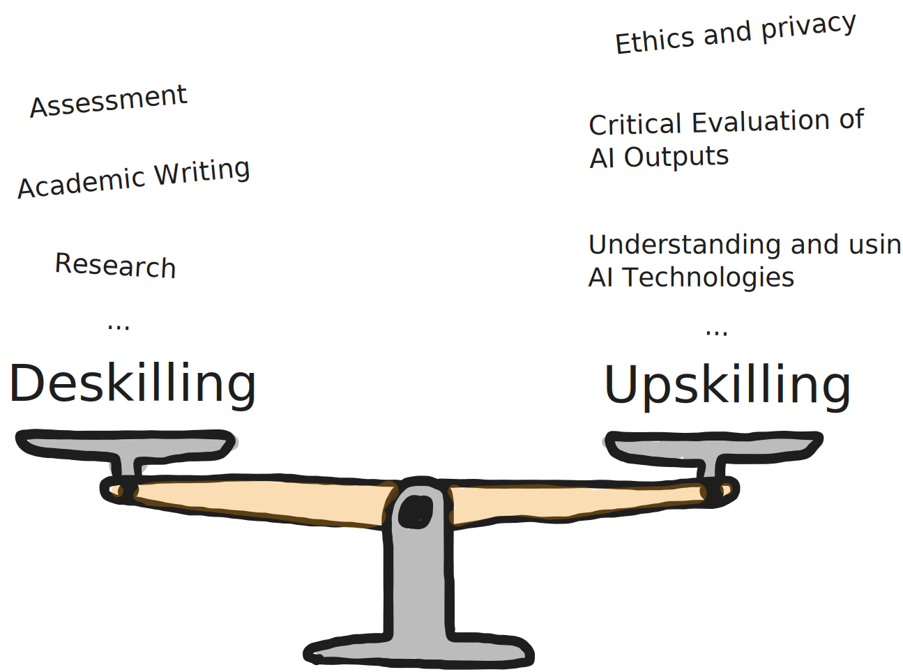
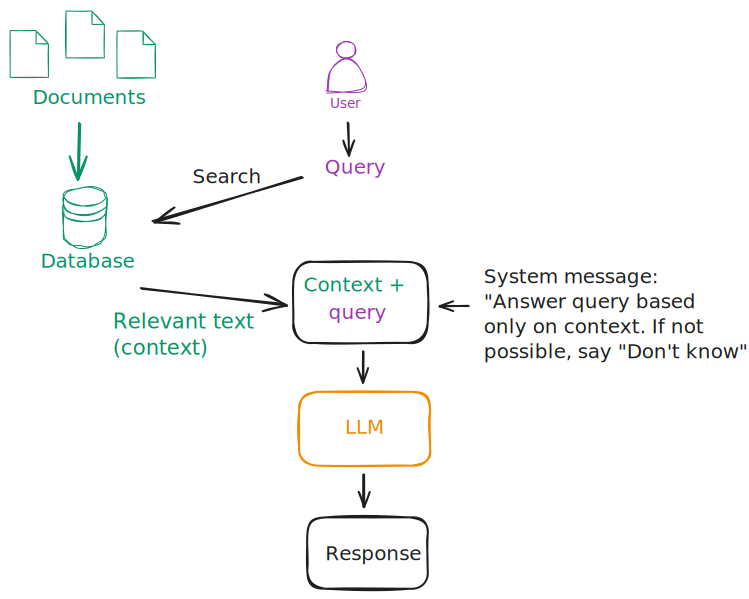
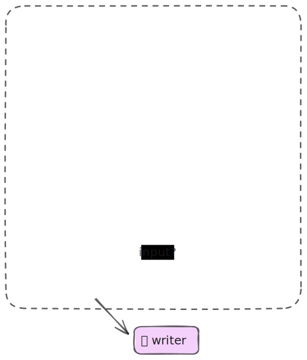

Prompt Labor: Vertiefung
KI-Sprachmodelle in der Lehre nutzen
Orientierungshilfe für Lehrpersonen der BFH
Haltung der BFH: Technologien, die den Lernprozess unterstützen und praxisrelevant sind, sollen in die Lehre einbezogen werden.
Einsatz von KI in der Lehre: Die Mehrheit der Studierenden wird KI-Tools nutzen. Studierende sollen lernen, Technologien kompetent einzusetzen und kritisch zu hinterfragen.
Competencies

Deskilling vs. upskilling

Effective teaching strategies
Mollick and Mollick (2023): 5 teaching strategies that are supported by research but difficult to apply in practice.
- Providing multiple examples and explanations.
- Uncovering and addressing student misconceptions.
- Frequent low-stakes testing.
- Assessing student learning.
- Distributed practice.
Providing multiple examples and explanations
Expose students to a variety of examples – single examples may lead students to focus on superficial details instead of the core concept.
Promotes deeper understanding, assist in recalling information, stimulate critical thinking.
Variety helps students generalize, enabling them to apply this learning in other contexts.
Time constraints, need to consider factors like relevance, engagement, and the right level of detail.
Tools
- Prompt engineering: guide LLMs to produce desired behaviour
- Design custom chatbots
- Retrieval-augmented generation (RAG)
- Multi-agent models
Prompt engineering

Basics of prompting
OpenAI’s strategies for using their models effectively.
These include:
- writing clear instructions
- providing reference texts
- splitting tasks into subtasks
- giving the LLM ‘time to think’
- using external tools
Pros and cons
Can guide the LLM to produce the desired behaviour.
Requires little technical expertise.
May require trial and error to find the right prompt.
ChatGPT with GPT-4o
Introducing GPT-4o and more tools to ChatGPT free users
- Multimodal conversational agent
- Web search
- Upload documents
- Use GPTs and the GPT Store
AI-powered virtual tutor
Demo: Math problems with GPT-4o
Creation of AI-powered virtual tutors or professors that can adapt to a student’s individual learning needs, based on a set of guidelines and content provided by the educational institution and the educator.
Virtual tutors engage in natural language communication, both through voice and text, and maintain an adaptive capacity to evaluate and guide the student towards specific learning objectives.
This level of personalized attention could revolutionize the way we approach education, ensuring that each student receives the support they need to succeed.
Custom chatbots
- Custom conversational agents for specific use cases.
DEMO: Socratic mentor for reflective writing
- LTI integration with Moodle
- Embedded within Moodle course
- Use Azure OpenAI (privacy concerns, hosted in CH)
Retrieval-augmented generation

Retrieval-augmented generation
Multi-agent models

Use cases:
- Feedback for formative assessments
- Evaluation of essay grading (Hackl et al. 2023)